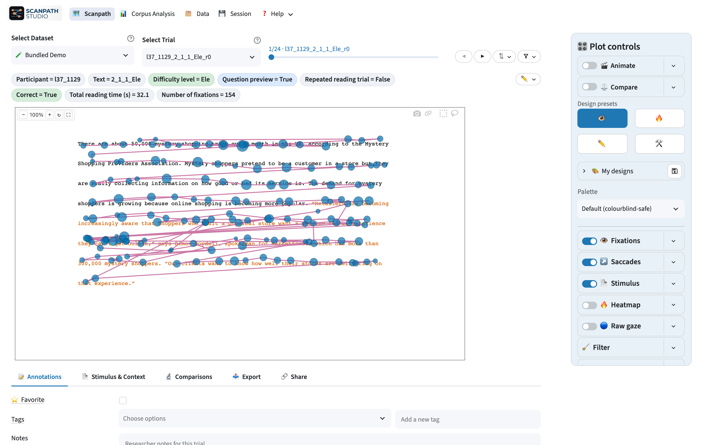

Scanpath Studio¶
See eye-tracking-while-reading data the way the reader saw it — words at their true on-screen positions, with fixations, saccades, heatmaps, and animated replay layered on top. Publication-ready figures included.

What it does¶
-
True-to-scale scanpaths
The stimulus text is re-rendered at its exact on-screen geometry, so fixations, saccades, and word boxes line up with what the reader actually saw — or overlay the original stimulus image. See how the rendering works.
-
Canonical reading measures
FFD, gaze duration, go-past, total fixation duration, skips, and regressions per word — precomputed EyeLink IA values are used when present, computed natively when not.
-
Corpus analysis
Question-oriented views: profile a text across readers, a reader across trials, or one or two groups — with shared measure pickers, spread bands, effect sizes, and per-view CSV downloads.
-
Vertical drift correction
The ten Carr et al. (2021) line-assignment algorithms, applied in place or compared side-by-side in a grid, ported natively (no GPL dependency).
-
Any dataset
Auto-detects EyeLink / Gazepoint / snake-case columns, with a guided upload wizard and manual mapping override. OneStop, PoTeC, and MultiplEYE load out of the box. See the data format.
-
Everything exports
HTML / PNG / SVG / PDF figures (also as separable layers), GIF / MP4 replays, tidy CSV/Parquet tables, and shareable deep links. The scanpath and replay figures are also scriptable via the Python API and CLI.
Ways to run it¶
-
In the browser
The hosted demo runs the bundled 3-participant OneStop sample — nothing to install.
-
From PyPI
Python 3.11–3.14 — see Getting started.
-
As a desktop app
A double-clickable build for Windows / macOS / Linux — no Python needed, and private data never leaves your machine. Download & instructions.
The app in one paragraph¶
Two views, toggled from the header: Scanpath Visualization (one trial — the layered plot plus Annotations, Stimulus & questions, Comparisons, Line assignment, Export, Data Inspection, and Share subtabs) and Corpus Analysis (Per text · Per reader · Groups). Layers — text, fixations, saccades, word boxes, heatmap, stimulus image — toggle independently; Animate replays the reading, Compare overlays a second trial, and the Comparisons subtab ranks same-text scanpaths by similarity. Everything obeys the active trial filters, and the single-trial scanpath and replay figures are reproducible headless through the same pipeline.
Citing Scanpath Studio
If you use Scanpath Studio in your research, please cite it — the citation
metadata lives in
CITATION.cff
(also surfaced in the app's About panel), and the bundled demo data comes
from OneStop Eye Movements.